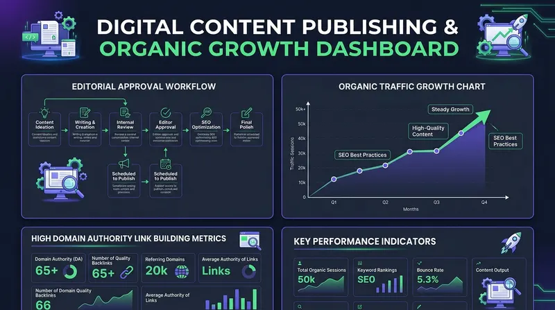

SosoActive: The Ultimate Social Media Platform – Features, Community Ecosystem & Comprehensive User Guide
- 1. What is SosoActive? An Overview of the Social Networking Revolution
- 2. Key Features & Capabilities of the SosoActive Platform
- 2.1 Digital Identity & Expressive User Profiles
- 2.2 Interest-Driven Feed Algorithms & Content Discovery
- 2.3 Multi-Media Creation Tools & Interactive Publishing
- 2.4 Privacy-First Architecture & User Data Protection
- 2.5 Advanced Social Networking & Live Interaction Tools
- 3. Core Topic Categories & Community Ecosystems
- 3.1 Technology & Software Engineering Communities
- 3.2 Enterprise Business, Startups & Leadership
- 3.3 Professional B2B Services & Digital Collaboration
- 3.4 Home Decor, Architecture & Interior Aesthetics
- 3.5 Healthcare, Wellness & Mindful Living
- 4. How to Get Started on SosoActive: Step-by-Step User Onboarding Guide
- 4.1 Creating Your Account & Setting Interests
- 4.2 Crafting High-Engagement Posts & Joining Circles
- 4.3 Creator Badges & Community Recognition
- 5. Why Creators, Businesses & Users Choose SosoActive
- 6. Comparative Matrix: SosoActive vs Legacy Social Networks
- 6.1 Community Safety, Anti-Spam & Content Integrity
- 7. Frequently Asked Questions (FAQs) About SosoActive
- 8. Conclusion & The Future of Social Networking on SosoActive
1. What is SosoActive? An Overview of the Social Networking Revolution
In an era where social media feeds are often dominated by invasive advertisements, echo chambers, and opaque algorithms, users are actively seeking alternatives that prioritize genuine human connection and quality content sharing. The platform known as sosoactive has emerged as the ultimate social media platform designed to empower content creators, industry professionals, and everyday enthusiasts.
1.1 The Vision & Evolution Behind SosoActive
Developed to redefine online community networking, SosoActive brings back the original promise of the digital web: connecting global users based on shared ideas, creative passion projects, professional achievements, commercial growth strategies, and mutual interests. By blending interactive community discussion forums, real-time activity feeds, and modern creator publishing tools, SosoActive bridges the gap between structured discussion boards and modern social media platforms.
At its core, SosoActive combines interactive social networking capabilities with interest-based community hubs. Whether you want to participate in discussions about cutting-edge artificial intelligence, share interior home design transformations, exchange corporate strategy insights, or connect with health and wellness advocates, SosoActive provides a streamlined environment where content quality and respectful discourse come first.
Unlike legacy social networks that sell user attention to the highest bidder, SosoActive focuses on organic reach, transparent chronological topic feeds, and collaborative community building. This user-first design approach makes it the preferred platform of choice for millions of creators and everyday members seeking a modern, distraction-free digital social networking experience.
2. Key Features & Capabilities of the SosoActive Platform
SosoActive is built on a modern tech stack designed to deliver instantaneous interactions, smooth media playback, and intuitive navigation across mobile and desktop devices. The platform offers a rich suite of interactive tools:
Expressive Profiles
Customizable digital identities featuring bio badges, portfolio showcases, verified credentials, and activity timelines.
Topic-Based Discovery
Explore interest-driven channels across Technology, Business, Services, Home Decor, and Healthcare without algorithmic noise.
Real-Time Conversations
Participate in threaded discussions, live Q&A sessions, direct messaging, and interactive community polls.
Privacy First
Granular privacy controls, strict data encryption, zero intrusive tracking, and complete user ownership of published content.
2.1 Digital Identity & Expressive User Profiles
Your profile on SosoActive is your personal digital homepage. Users can easily customize their bio, highlight key achievements, pin top-performing community posts, link social portfolios, and manage custom privacy settings. Whether you represent an individual creator, a business brand, or a specialized community leader, your profile on SosoActive gives you full control over how you present your digital footprint to the global community.
2.2 Interest-Driven Feed Algorithms & Content Discovery
Traditional social media platforms use hyper-aggressive recommendation algorithms designed to maximize screen time through outrage or clickbait. In contrast, SosoActive utilizes interest-driven content distribution models. When you join a community hub—such as Technology or Home Decor—your feed displays chronological posts and high-value updates directly from creators and topics you follow.
2.3 Multi-Media Creation Tools & Interactive Publishing
Creators on SosoActive enjoy instant access to flexible content creation tools. You can publish rich text posts, long-form articles, high-resolution photo galleries, short audio clips, and embedded videos. Integrated markdown formatting, code snippet syntax highlighting, and visual gallery embeds allow creators to express complex ideas effortlessly.

2.4 Privacy-First Architecture & User Data Protection
User privacy is a fundamental right, not an optional add-on. SosoActive is engineered with end-to-end data security practices. The platform does not sell user data to third-party data brokers, nor does it run intrusive cross-site tracking scripts. Every interaction on SosoActive is safeguarded by modern TLS 1.3 encryption, ensuring a safe environment for open dialogue.
2.5 Advanced Social Networking & Live Interaction Tools
To facilitate dynamic engagement between community members, SosoActive includes built-in live social interaction features. Users can launch real-time text discussions, create interactive polls, host live Q&A sessions, and participate in direct messaging channels. Creators can also form private or invite-only circles for exclusive Masterclasses, team collaboration, or specialized discussion groups.
3. Core Topic Categories & Community Ecosystems
To foster meaningful engagement, SosoActive organizes discussions into five dedicated community verticals. Each vertical provides tailored discussion boards, creator showcases, and specialized content channels.
3.1 Technology & Software Engineering Communities (Explore Tech Hub)
The technology community on SosoActive is a vibrant gathering place for software developers, AI researchers, cybersecurity experts, and gadget enthusiasts. Members share code snippets, debate emerging tech stacks, post product reviews, and discuss machine learning developments in an open, collaborative forum.
Developers on SosoActive frequently collaborate on open-source software projects, share cloud infrastructure blueprints, analyze WebAssembly performance benchmarks, and solve complex software engineering hurdles in real time through dedicated technical circles.
3.2 Enterprise Business, Startups & Leadership (Explore Business Hub)
For entrepreneurs, venture capitalists, marketing strategists, and corporate executives, the business network on SosoActive delivers valuable networking opportunities. Topics range from startup funding strategies and venture capital trends to leadership methodologies and B2B growth frameworks.
Founders utilize SosoActive to pitch pitch-decks, gather peer feedback, study unit economics models, and recruit top executive talent across global markets.
3.3 Professional B2B Services & Digital Collaboration
The professional services hub connects freelancers, agencies, consultants, and legal/financial experts. Members discuss agency growth models, client management best practices, service-level agreements (SLAs), and collaborative B2B opportunities.
Agencies share operational templates, client onboarding frameworks, and project management strategies, establishing SosoActive as an indispensable resource for professional service providers.
3.4 Home Decor, Architecture & Interior Aesthetics
Design enthusiasts, interior decorators, architects, and DIY home improvers thrive in the home decor community on SosoActive. Members share room transformation photos, biophilic interior concepts, furniture styling tips, and smart home automation guides.
By consolidating diverse interest channels into a single, cohesive, high-performance portal, SosoActive empowers global members and creators to access relevant discussions without experiencing content clutter, spam, or technical latency.
3.5 Healthcare, Wellness & Mindful Living
The healthcare and wellness community focuses on evidence-based health tips, mental well-being strategies, fitness routines, and medical technology innovations. Supported by health professionals and wellness advocates, this hub fosters supportive, constructive conversations.
Members discuss preventive health protocols, bio-hacking techniques, stress reduction methodologies, and digital health wearables, making SosoActive a premier health community hub.
4. How to Get Started on SosoActive: Step-by-Step User Onboarding Guide
Joining the SosoActive social community is simple and takes less than two minutes:
4.1 Creating Your Account & Setting Interests
To begin, visit SosoActive and click "Join Community". Enter your basic email, select your unique user handle, and pick your primary interest categories (such as Tech, Business, Home Decor, or Health). Your feed will immediately populate with relevant posts.
4.2 Crafting High-Engagement Posts & Joining Circles
Once logged in, click the "Create Post" button to share your first article or photo gallery. You can tag relevant community circles, add interactive polls, and invite fellow members to discuss your post in the comments section.
4.3 Creator Badges & Community Recognition
As you actively contribute to SosoActive, you earn reputation badges based on community upvotes, constructive comments, and quality post publishing. Verified creator badges help build trust across interest circles, allowing subject-matter experts to grow authentic followings effortlessly.
5. Why Creators, Businesses & Users Choose SosoActive
Content creators and businesses face increasing friction on legacy social networks due to declining organic reach, invasive ad placements, and pay-to-play algorithms. SosoActive offers a refreshing alternative by prioritizing genuine creator ownership, unthrottled visibility, and authentic community engagement.
Whether you are building a personal brand as a software engineer, showcasing a freelance design portfolio, or growing an enterprise B2B company, SosoActive provides the infrastructure necessary to connect directly with your target audience without algorithmic paywalls.
| Platform Advantage | How SosoActive Empowers Users | Key Benefit for Community Members |
|---|---|---|
| Unthrottled Organic Reach | Posts are distributed to followers based on interest relevance rather than ad bidding. | Creators build genuine, highly engaged audiences without paying for reach. |
| Distraction-Free Reading | Clean, light-theme interface with zero invasive pop-ups or auto-playing ad videos. | Seamless user experience focused entirely on meaningful content and discussion. |
| Respectful Moderation | Community-driven moderation and AI safety tools filter out spam and toxic behavior. | A safe, constructive environment for constructive dialogue and networking. |
| Cross-Device Speed | Ultra-fast, lightweight web performance guarantees instant page loads on mobile & desktop. | Smooth browsing experience regardless of hardware specs or connection speed. |
6. Comparative Matrix: SosoActive vs Legacy Social Networks
Comparing SosoActive to traditional social media platforms highlights why users are transitioning to our community ecosystem:
6.1 Community Safety, Anti-Spam & Content Integrity
Online safety and constructive discourse are core priorities for SosoActive. Unlike platforms that allow automated spam bots and harmful trolling to flourish, SosoActive deploys multi-layered community safety features:
- Automated Bot Mitigation: Real-time heuristic detection blocks fake accounts and automated spam networks from entering community feeds.
- Community Self-Moderation: Circle moderators and verified members can flag harmful content, triggering immediate review by platform safety officers.
- Customizable Block & Filter Lists: Users have complete control over keyword filters, comment permissions, and direct message settings.
| Feature / Criterion | SosoActive Social Platform | Legacy Social Media Networks |
|---|---|---|
| Feed Logic | Chronological & Interest-Based Topic Hubs | Opaque, ad-driven engagement algorithms |
| Data Privacy | Strict encryption; zero data selling | Aggressive cross-site tracking & ad profiling |
| User Interface | Clean, modern light theme layout | Cluttered layouts with forced video ad breaks |
| Organic Visibility | High organic reach for quality posts | Depressed organic reach forcing paid boosts |
| Community Control | User-curated topic channels & custom privacy | Limited control over feed content |
7. Frequently Asked Questions (FAQs) About SosoActive
SosoActive is an innovative social media platform where users create profiles, publish posts, engage in discussions, and join interest-based communities across Technology, Business, Services, Home Decor, and Healthcare.
Yes, SosoActive is completely free for individual creators, community members, and businesses looking to build authentic social networks.
SosoActive uses modern TLS 1.3 data encryption and strict privacy protocols. We do not sell user data or use cross-site tracking scripts.
Yes, SosoActive supports rich multi-media sharing, including long-form articles, photos, short posts, external links, and embedded videos.
8. Conclusion & The Future of Social Networking on SosoActive
Social networking is undergoing a fundamental transformation toward privacy, speed, and topic-focused community hubs. SosoActive stands at the forefront of this movement by providing a clean, high-performance social platform where creators, professionals, and enthusiasts connect authentically.
By combining interest-driven content discovery with robust user data privacy, transparent chronological feeds, and specialized topic circles across Technology, Enterprise Business, Professional Services, Home Decor, and Healthcare, SosoActive eliminates the frustration of pay-to-play algorithms and invasive tracking.
Whether you want to explore technical innovations, build a corporate brand, share interior decor ideas, or engage in health discussions, sosoactive provides the community, privacy, and tools you need for an inspiring social media experience. Join SosoActive today and experience the future of digital community networking!